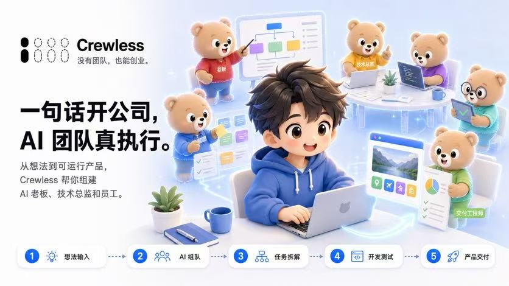

过程比结果值得记。
项目怎么来的、踩了什么坑、最后跑到了哪——结果未必都漂亮，过程全部算数。
 木鱼拓哉过程记录小刚CLAW · CREWLESS
木鱼拓哉过程记录小刚CLAW · CREWLESS数字员工：小刚Claw · 架构笔记
细节待解密公司项目 · AI-Coding / AI-QA
讲了能讲的：整体架构长什么样、两条线（Coding / QA）怎么分工、落地之后的效果如何。
不能讲的都收在「待解密」里——公司项目，分寸要先守住。
正文撰写中 ✦ 架构图 + 效果数据，陆续补上crewless · Hackathon 完整复盘
撰写中Hackathon 项目 · idea → 全自动 web 产品

从一个 idea，到全自动跑起来的 web 产品——灵光一现、方案怎么定、管线怎么串、现场 demo 跑通的那一刻。
最后没获奖（难受）。但过程值得完整记下来，这篇就是全量复盘。
正文撰写中 ✦ 从 idea 到 demo 的每一步都会写进来